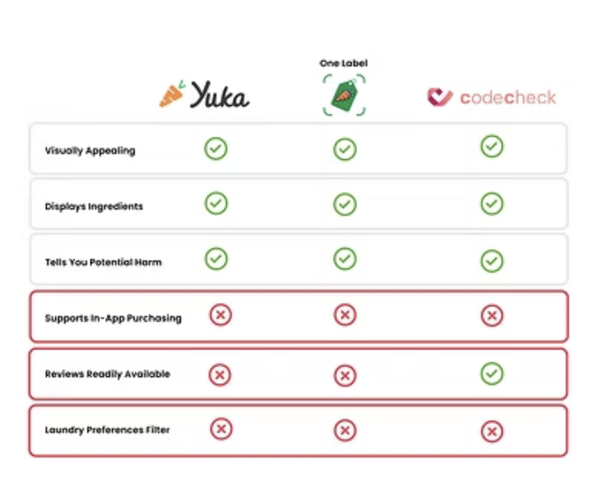
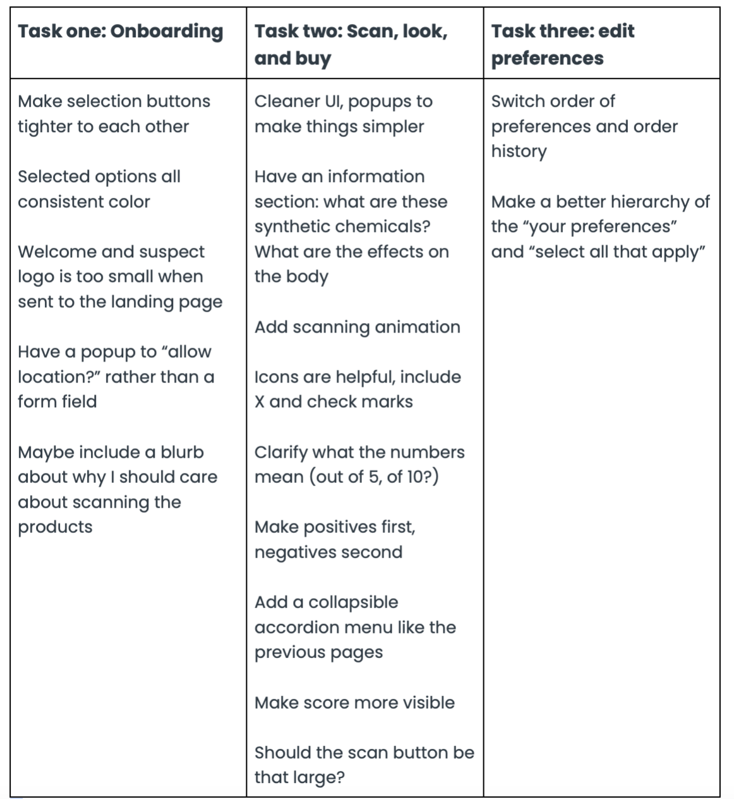
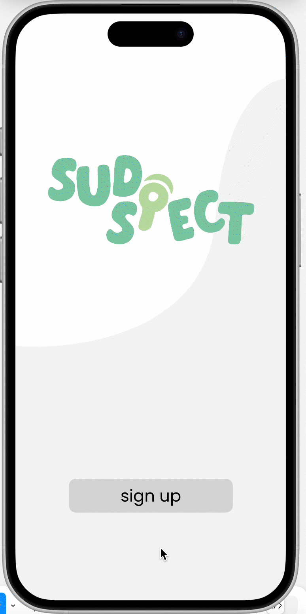
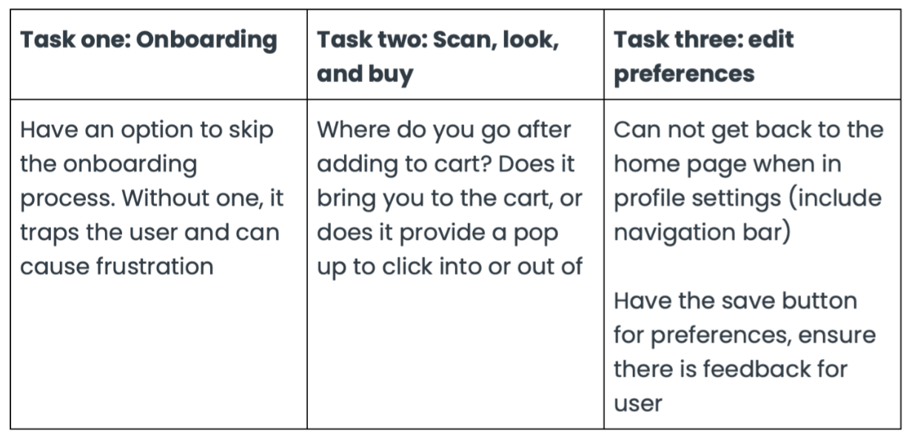

Sudspect is a mobile app that supports scanning for fast access to ingredient information on common home cleaning products; presenting a rating for each product scanned
Consumers struggle to make eco-conscious laundry choices due to greenwashing and a lack of transparency, leading to microplastic pollution that harms ecosystems and human health. Without accessible, reliable information, identifying truly sustainable products remains a challenge.
Target Audience: Parents and caregivers who are concerned about harmful chemicals in laundry detergent
Eco conscious consumers looking for genuinely sustainable products, not the mainstream greenwashing
Low-income consumers looking for affordable and non-toxic alternatives
People with sensitive skin or allergies in need of synthetic-free products
Objectives: The goal is to increase transparency, make sustainable shopping easy and affordable, drive awareness of microplastics, and hold brands accountable using a brand sustainability tracker to expose misleading or greenwashed claims.
To be accomplished through barcode scanners.
Brand transparency tracker
Personalized recommendations based on budget and needs
Easy-to-digest educational facts about sustainability in products
Clear visual hierarchy with icons and color-coded ratings, fast UI
60% moderately value sustainability in laundry products
40% reported not being very aware of environmental impacts in laundry products
80% of consumers are unsure which products are truly sustainable
User Persona
Meet Stephen, a low-income single dad, is busy and needs a fast and efficient solution to identify sustainable laundry options to best protect his children from harmful chemicals, but also an efficient product to sanitize and remove stains from their clothes.
Pain Points
Consumers struggle finding budget friendly options that are sustainable and clean
Consumers find it difficult to know which options are genuinely sustainable
Competitve Analysis

All three of these apps include a simple display breakdown of ingredients, the potential harm, and are visually appealing. The most common gaps are the lack of in-app purchasing. A user can scan a product, but has to go to a different browser or app to complete a purchase. Additionally, only Codecheck had user reviews on products displayed - this is an important feature to build trust and gain community insights. Lastly, all of the apps covered a wide range of products, often meaning it was difficult to see laundry products right away and filter by skin type, microplastics, chemicals, and more without being convoluted with other categories.
Ideation


Wire-flows


Usability Testing

My first round of user testing provided clarity on what my next steps were. I organized and categorized the most common pain points for my three flows.
Mid-Fidelity


User Testing Round Two

My second round of user testing provided more interactive feedback due to the mid-fidelity offering user touch points. I again organized my second phase of user testing into the three main categories, identifying the most common issues my users experienced.
Final Solution
Onboarding

Scanning & Add to Cart

Exploring Categories

Exploring Reviews